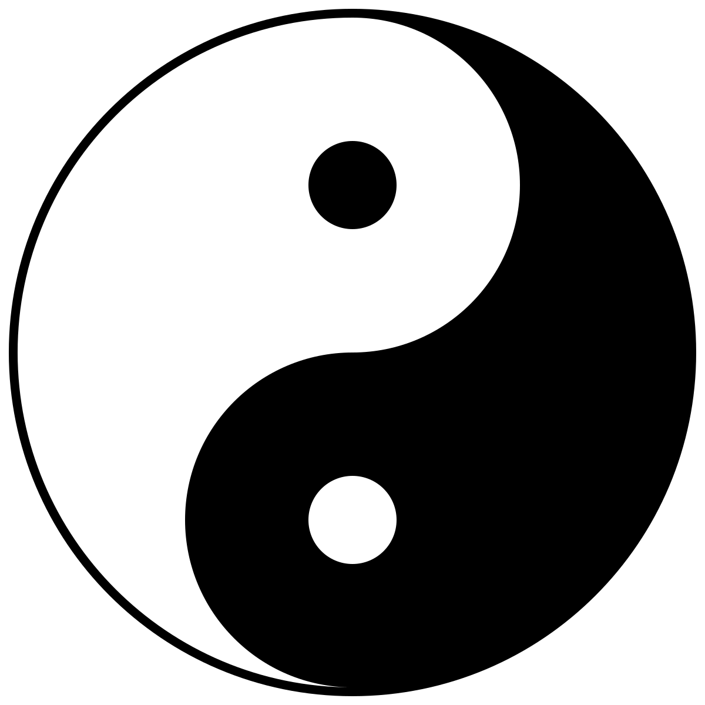

Hong Kong exists as an administrative region in China. On July 1, 1997 Britain returned Hong Kong to China and the region’s relationship with China was established as “one country, two systems”. Hong Kong had been a part of China for over 2000 years since the Qin Dynasty in the third century BCE. In the other half of the 19th century Britain had begun to seize control of regions we today associate with Hong Kong such as the Hong Kong Island, The Kowloon Peninsula and The New Territories.
The British Empire signed, together with China, on July 1, 1898, the Second Convention of Peking, which meant Britain was to lease the regions between Boundary Street and Shenzhen River. This lease was to expire on the first of July in 1997, 99 years after the lease was signed.
Peter Fitzgerald, amendments by Globe-trotter, CC BY 3.0, via Wikimedia Commons
As the expiration day for the lease came closer Britain decided in 1982 to negotiate the transition of the leased region. This further led to Britain deciding to return the Kowloon Peninsula and the Hong Kong Island to China. In the declaration it was stated that Hong Kong was to become a part of China, but operate with the “current social and economic systems”, thus creating the “one country, two systems” phrase.
Photograph: Pierre-Antoine Donnet/AFP/Getty Images
Religion
The major religions in Hong Kong are Taoism, Christianity and Buddhism. The smaller religions in Hong Kong mainly consist of Islam, Sikhism and Judaism. Most Hong Kongers do not feel like religion is a significant part of their daily lives, but many still follow the teachings of Confucianism. While people do have their own religions they often integrate Confucianism together with it as it is viewed more as a philosophy than a religion.

Gregory Maxwell, Public domain, via Wikimedia Commons
The Philosophy of Confucianism is based on human relationships. All relationships are unequal and people should therefore live in defined hierarchical roles. Some examples may be the relationship between employee and employeer, father and son, student and teacher. If the inequality is respected it will become easier to preserve stable relationships between individuals and in society.
No machine-readable author provided. Mr. Tickle assumed (based on copyright claims).
CC BY-SA 3.0, via Wikimedia Commons
Food
There are many different traditional foods in Hong Kong, such as dim sum, fish balls, egg waffles and pineapple buns. Dim sum consists of smaller dishes like chinese dumplings, steamed shrimp dumplings and barbecued pork buns.

ProjectManhattan, CC BY-SA 3.0, via Wikimedia Commons
Fish balls is a common street food in Hong Kong, it is made with fish and fried in curry.

Wing11803, CC BY-SA 4.0, via Wikimedia Commons
Egg waffles is Hong Kong’s own version of the traditional waffle. These egg waffles have a crispy exterior and a soft sponge-like interior. They are often served with different kind of toppings.

{kind=link}
{kind=link}
{kind=link}
{kind=link}
{kind=link}
{kind=link}